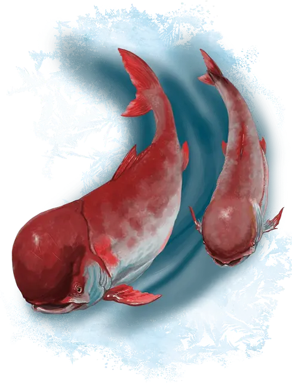

Тупоголовая форель
Knucklehead Trout
Маленький Зверь, без мировоззрения

Класс Доспеха 12
Хиты 7 (2к6)
Скорость 0 футов, плавая 30 футов
| мод | спас | ||
|---|---|---|---|
| СИЛ | 14 | +2 | +2 |
| ЛОВ | 14 | +2 | +2 |
| ТЕЛ | 11 | +0 | +0 |
| мод | спас | ||
|---|---|---|---|
| ИНТ | 1 | −5 | −5 |
| МДР | 6 | −2 | −2 |
| ХАР | 1 | −5 | −5 |
Чувства тёмное зрение 60 футов, пассивное Восприятие 8
Опасность 0
Бонус мастерства +2
Особенности
Подводное дыхание. Тупоголовая форель может дышать только под водой.
Действия
Укус. . Рукопашная атака оружием: +4 к попаданию, досягаемость 5 футов, одна цель. Попадание: 4 (1к4 + 2) колющего урона.
Хвост. . Рукопашная атака оружием: +4 к попаданию, досягаемость 5 футов, одна цель. Попадание: 4 (1к4 + 2) дробящего урона.
Описание
Вкусную и крепкую тупоголовую форель нелегко поймать в сети. Более того, использование лески при подтягивании такой сильной рыбы — задача не из-лёгких. Неосторожные рыбаки, которых форель утягивает за собой в ледяную воду, могут легко утонуть, особенно если они закутаны в меха и плащи.
Самец тупоголовой форели может весить 70 фунтов и более. Самки, как правило, меньше и весят около 50 фунтов. Ценится форель прежде всего за кости, похожие на слоновые.